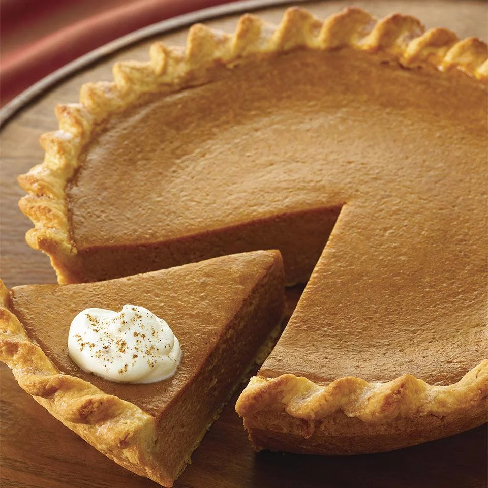

Pumpkin Pie

Pumpkin pie is a delicous recipe generally used for thanksgiving but this tasty treat can be made anytime!
Ingredients:
- 1 frozen unbaked (9-inch) deep dish pie crust
- 1 (15 oz) can pumpkin
- 1 (14 oz) can sweetend condensed milk
- 2 eggs
- 1 tablespoon McCormick Pumpkin Pie Spice
- 1 tablespoon Vanilla Whipped Cream
Directions:
- Prheat oven to 425 degrees F. Place pie crust on large foil-lined baking sheet
- Mix pumpkin, milk, eggs, and pumpkin pie spice in a large bowl until smooth. Pour into crust
- Bake 15 minutes. Reduce oven temperature to 350 degrees F. Bake 40 minutes longer or until knife inserted 1 inch from crust comes out clean. Cool completely on wire rack. Serve with Vanilla Whipped Cream, if desired.
Back to main page